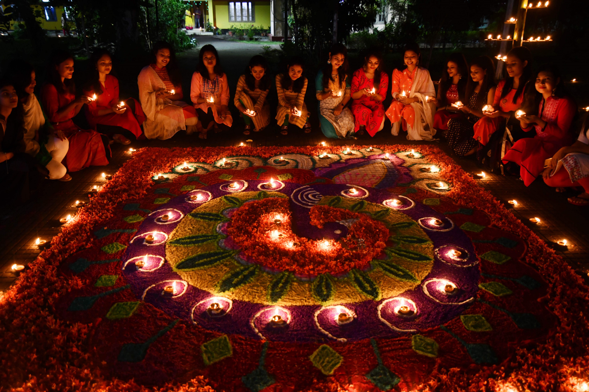

Some of the festivals are listed below

1.Holi
Holi is a popular ancient Hindu festival, also known as the "festival of love", the "festival of colours", and the "festival of spring".
The festival celebrates the eternal and divine love of Radha and Krishna. It also signifies the triumph of good over evil. It originated
and is predominantly celebrated in India, but has also spread to other regions of Asia and parts of the Western world through the diaspora from the Indian subcontinent.
Holi celebrates the arrival of spring, the end of winter, the blossoming of love, and for many it is a festive day to meet others, play and laugh, forget and forgive,
and repair broken relationships.The festival also celebrates the beginning of a good spring harvest season.

2.Onam
Onam is an annual Hindu festival celebrated in southern Indian state of Kerala. It is a harvest festival celebrated by Malayalis whose date is based on the Panchangam
and falls on the 22nd nakshatra Thiruvonam in the month Chingam of Malayalam calendar, which in Gregorian calendar overlaps with August–September.

3.Diwali
Diwali, also spelled Divali, one of the major religious festivals in Hinduism, Jainism, and Sikhism, lasting for five days from the 13th day of the dark half of the lunar
month Ashvina to the second day of the light half of the lunar month Karttika. (The corresponding dates in the Gregorian calendar usually fall in late October and November.
The name is derived from the Sanskrit term dipavali, meaning “row of lights.” The festival generally symbolizes the victory of light over darkness.

4.Pongal
Pongal is a four-days-long harvest festival celebrated in Tamil Nadu, a southern state of India. For as long as people have been planting and gathering food, there has been some form of
harvest festival. Pongal, one of the most important popular Hindu festivals of the year. This four-day festival of thanksgiving to nature takes its name from the Tamil word meaning "to boil"
and is held in the month of Thai (January-February) during the season when rice and other cereals, sugar-cane, and turmeric (an essential ingredient in Tamil cooking) are harvested.
5.Christmas
Christmas, Christian festival celebrating the birth of Jesus. The English term Christmas (“mass on Christ’s day”) is of fairly recent origin.
The earlier term Yule may have derived from the Germanic jōl or the Anglo-Saxon geōl, which referred to the feast of the winter solstice. The corresponding terms in other
languages—Navidad in Spanish, Natale in Italian, Noël in French—all probably denote nativity. The German word Weihnachten denotes “hallowed night.” Since the early 20th century,
Christmas has also been a secular family holiday, observed by Christians and non-Christians alike, devoid of Christian elements,
and marked by an increasingly elaborate exchange of gifts. In this secular Christmas celebration, a mythical figure named Santa Claus plays the pivotal role.
click here to go back to the first page
click here to see when these festivals begin and end